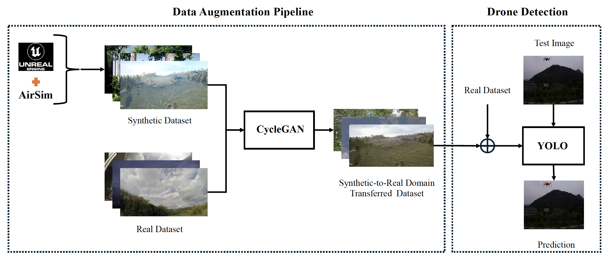

Qualitative Results

ICPR 2024 · Lecture Notes in Computer Science, Vol. 15306 · Springer

This work introduces a two-phase data augmentation pipeline for long-range UAV detection. First, synthetic drone imagery is generated using Unreal Engine to increase dataset diversity. Then, CycleGAN is used to translate synthetic images into a more realistic visual domain, reducing the synthetic-to-real gap. The augmented datasets are used to train YOLO-based drone detectors and are evaluated on multiple unseen real-world UAV detection datasets.
Code, configuration files, and instructions for reproducing the augmentation and detection pipeline will be released in this repository.
@inproceedings{arezoomandan2025data,
title={Data Augmentation Pipeline for Enhanced UAV Surveillance},
author={Arezoomandan, Solmaz and Klohoker, John and Han, David K.},
booktitle={Pattern Recognition. ICPR 2024},
series={Lecture Notes in Computer Science},
volume={15306},
pages={366--380},
year={2025},
publisher={Springer},
doi={10.1007/978-3-031-78172-8_24}
}For questions, please contact Solmaz Arezoomandan.